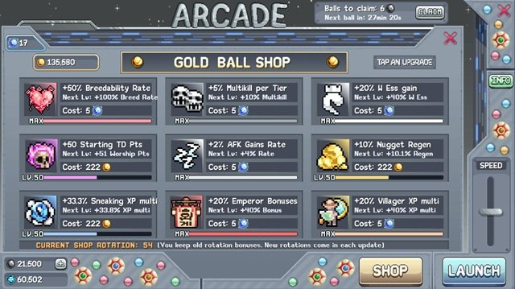
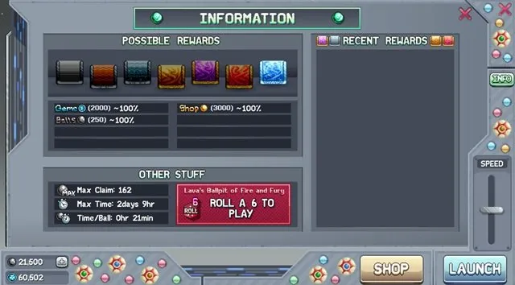
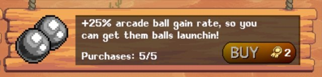
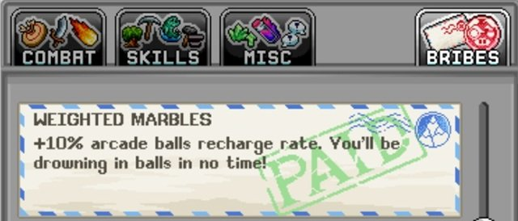
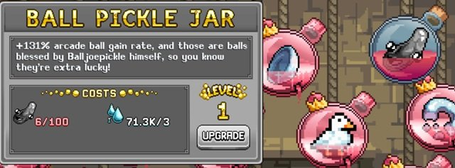

이 Arcade Shop 우선순위 가이드를 활용하여 황금 공(golden ball)과 코스믹 공(cosmic ball)을 아끼면서 중요한 계정 전체 보너스를 극대화하세요. 소모성 보상, 젬, 영구 보너스용 황금 공을 제공하는 이 파친코 스타일의 Idleon 미니게임은 World 2의 광대 NPC에서 플레이할 수 있습니다.
Gold Ball Shop은 50개 이상의 계정 보너스를 순환 제공하여 무엇을 최대로 올릴지 결정하기 어렵습니다. 이 가이드에는 모든 아케이드 상점 보너스, 티어 목록 우선순위, 일반 아케이드 팁, 아케이드 공 생성 속도를 높이는 최고의 방법이 포함됩니다.
Arcade Shop 우선순위 (티어 목록)
황금 공과 코스믹 공에 대해 이 우선순위 목록 순서를 사용하되, 일부 아케이드 보너스는 나타날 때 이미 불필요하거나 아직 해당 메커니즘을 해금하지 않아 영향이 없을 수 있으므로 자신의 계정 진행 상황을 고려하세요. 점점 늘어나는 아케이드 보너스 풀을 감안하여, 대부분의 플레이어는 처음에는 S등급과 A등급만 구매하는 것을 권장합니다. 대부분의 보너스는 황금 공 33,155개로 최대에 도달하지만, 후반 월드 부스트는 최대 216,306개의 황금 공이 필요할 수 있습니다.
| Arcade Shop 보너스 | 최대 효과 (코스믹 더블 전) | 등급 | 비고 |
|---|---|---|---|
| Gold Ball Gain | 100% | S | 황금 공 획득량을 향상시켜 미래의 모든 아케이드 업그레이드가 더 쉬워집니다. |
| Prima Bubble Bonus | 5% | S | 이 메커니즘을 해금한 후 추가 연금술 버블 보너스를 위해 중요합니다. |
| Emperor Bonus | 20% | S | World 6 보스를 처치한 후 해금된 보너스에 추가 부스트. |
| Spelunking Amber | 25% | S | Amber 획득을 늘려 World 7 스킬 진행을 가속. Amber는 조각상 드롭, 드롭률 등 유용한 계정 부스트가 많으며 장기 계정 가치를 가진 동굴 탐사 스킬도 진행합니다. |
| Spelunking XP Multi | 15% | S | 동굴 탐사 POW와 Amber를 스케일링하는 캐릭터 레벨을 높입니다. |
| Drop Rate | 15% | S | 희귀 드롭, 카드, 조각상 파밍에 광범위한 유용성. |
| Meritocracy Bonus | 5% | S | 강력한 효과를 가진 World 7 커뮤니티 투표 메커니즘을 강화합니다. |
| Refinery Speed | 15% | S | World 3의 소금 생산 병목을 극복하는 데 도움. 이것이 상점 순환에 나타날 때 소금 수요가 이미 충족되었다면 건너뛰세요. |
| Construction Build Speed | 200% | S | World 3 건설 건물을 더 빠르게 완료하여 고유한 계정 부스트 해금 또는 마법사 탑 레벨 향상. |
| Multikill per Tier | 5% | S | 새로운 월드 진입을 돕는 쉽게 얻을 수 있는 티어당 멀티킬 출처. |
| Villager XP Multi | 20% | S | 초기 마을 사람 레벨 획득을 돕는 World 5 동굴 메커니즘에 대한 주목할 만한 증가. |
| Kruk Bubble Levels | 20% | A | World 5의 Kruk Divinity에서 더 많은 일일 패시브 버블 획득. 연금술 진행이 낮은 계정에서 가치가 높아집니다. |
| Summoning XP Multi | 50% | A | 이 World 6 타운 스킬에 대한 희귀한 경험치 부스트 출처. 이 스킬의 레벨은 정수 생성과 Star Sign 효과를 향상시킵니다. |
| Research XP | 10% | A | 새로운 메커니즘을 해금하고 다른 경험치 출처와 함께 이 스킬의 진행을 가속하는 World 7 연구 획득의 유용한 부스트. |
| Fountain Speed | 15% | A | World 5 구멍의 분수 진행 시간을 줄여줍니다. 분수에는 강력한 계정 부스트가 많습니다. 결국 수익 감소에 도달하겠지만 이것이 더 빠르게 그 지점에 도달하게 해줍니다. |
| Minehead Currency | 12.5% | A | World 7의 광산 챌린지를 처리하는 데 도움이 되지만, 이 보너스들은 다른 메커니즘(예: 연구)으로도 느리게나마 달성 가능합니다. |
| Class XP Multi | 25% | A | 더 높은 캐릭터 레벨을 달성하는 데 유용한 배율. |
| Palette Luck | 25% | A | 강력한 게이밍 팔레트 부스트를 더 빠르게 해금하고 이후 레벨업에도 도움. |
| Cook Speed Multi | 20% | A | 강력한 계정 보너스가 많은 World 4 요리를 시작하는 큰 부스트. |
| Arcane Tachyons | 100% | A | Arcane Cultist는 업그레이드하는 데 가장 비용이 많이 드는 마스터 클래스이므로 아래 다른 옵션보다 이것을 우선시하세요. |
| Deathbringer Bones | 100% | A | 계정 전체 보너스를 위한 Deathbringer(World 6 클래스) 진행을 가속. |
| Windwalker Dust | 100% | A | Wind Walker에 대해서도 위와 동일. |
| AFK Gains Rate | 2% | A | 모든 Idleon 활동에 광범위한 효과. |
| Equinox Fill Rate | 75% | A | 드롭률, 탤런트 레벨, 연금술 부스트 등 고유한 Equinox 보너스 해금 속도 향상. |
| New Crown Chance | 7.5% | A | 이 게이밍 비트 배율을 더 빠르게 쌓는 데 도움이 되지만 다른 모든 게이밍 부스트에 비해 작은 요소입니다. |
| Divinity EXP | 20% | A | 제단 밖에서 경험치를 얻는 중요한 레벨 40 신성 기준점에 빠르게 도달하고, Arctis 탤런트 레벨을 향상시켜 지속적인 가치를 제공합니다. |
| White Essence Gain | 20% | B | 유용한 계정 업그레이드가 많은 World 6 스킬을 강화합니다. |
| Sushi Bucks | 12.5% | B | World 7 스시 합치기 메커니즘의 업그레이드 속도를 높이지만 전체적으로 작은 증가입니다. |
| Megacrop Chance | 25% | B | 스티커를 얻기 위한 메가 작물 확률을 높이지만, 스티커 확률은 금방 높아지고 보너스도 특별히 강력하지 않습니다. |
| Jade Gain | 25% | B | World 6 잠입 스킬 진행과 Jade Emporium 업그레이드 접근을 향상시킵니다. |
| Monument AFK | 50% | B | World 5의 다양한 기념비에 투자하는 시간 대비 수익을 크게 향상시킵니다. |
| Sigil Speed | 100% | B | 증가된 시길 속도의 희귀한 출처로 일부 핵심 계정 보너스가 있지만, 모두 최대화되면 쓸모가 없어집니다. |
| Base STR | 100 | B | 데미지와 스킬링을 향상시키며, 후반 게임에서 다른 계정 % 부스트와 결합하면 상당한 힘이 될 수 있습니다. |
| Base WIS | 100 | B | 위와 동일. |
| Base AGI | 100 | B | 위와 동일. |
| Base LUK | 100 | B | 위와 동일. |
| Daily Coral | 5% | C | 유용한 World 7 산호 부스트를 더 빠르게 얻는 데 도움. |
| Cash from Mobs | 15% | C | 추가 현금은 업그레이드 금고나 우표 업그레이드에 언제나 유용합니다. |
| Cash from Mobs | 10% | C | 위와 동일. |
| Total Accuracy | 30% | C | 월드 진입을 돕는 초반에 활용 가능한 큰 Accuracy(명중률) 출처. Accuracy가 지속적인 문제라면 여기에 황금 공을 추가하는 것을 고려하세요. |
| Sneaking XP Multi | 50% | C | 잠입 레벨은 World 6 스킬 진행을 돕는 전체 스텔스를 향상시킵니다. |
| Farming EXP | 15% | C | 농업 레벨은 땅 등급 업그레이드로 스텔스에 약간의 부스트와 스타 사인으로 작은 작물 진화 확률을 줍니다. |
| Worship Souls | 15% | C | 추가 숭배 영혼은 쌓는 데 시간이 걸리므로 유용합니다. |
| Trapping Critters | 15% | C | 마찬가지로 함정 놓기도 자원 축적이 느린 World 3 스킬입니다. |
| Skill EXP gain | 10% | C | 스킬 경험치에 대한 일반적인 부스트는 계정 진행의 다양한 요소에 도움이 됩니다. |
| Lab EXP gain | 15% | C | 모든 칩 슬롯을 해금하기 위해 실험실 레벨 75에 도달하는 시간을 단축합니다. |
| Sample Size | 2% | C | 샘플 크기는 강력한 계정 업그레이드이지만 목표치 90%(최대)에 도달하는 데 이것은 작은 양입니다. |
| Alchemy Liquids Cap | 12.5 | C | 약간의 추가 액체 용량을 추가하지만 액체 가마 업그레이드에 비해 작습니다. |
| Starting TD Points | 100 | C | 초반 타워 방어 웨이브를 약간 향상시켜 새로운 최고 점수에 도달하게 해줍니다. |
| Forge Capacity | 50% | C | 제련소 용량은 후반 방어구와 바이알을 위한 대량의 주괴를 획득하는 데 꽤 유용합니다. 단, World 5 동굴에서 이미 상당한 제련소 용량을 사용할 수 있습니다. |
| Medallion Chance | 50% | D | 메달리온 확률은 유용하지만 대부분의 메달리온에 대해 Wind Walker Compass와 Top of the Morning 업그레이드로 충분한 출처가 있습니다. |
| Sailing Loot | 15% | D | 선박 업그레이드에 유용하지만 전체 World 5 항해 전리품 획득에 비해 아주 작은 부스트입니다. |
| Nugget Regen | 15% | D | 추가 게이밍 너겟은 큰 황금 너겟을 약간 더 빨리 획득하게 해줍니다. |
| Trapping EXP | 25% | D | 레벨업하기 가장 어려운 스킬 중 하나로, 초반 스킬 경험치 부스트 중 최고입니다. |
| Artifact Find | 25% | D | World 5 항해를 완료하기 전에 약간의 시간을 절약하는 데 도움이 되지만 결국 쓸모없어집니다. |
| Artifact Find | 30% | D | 위와 동일. 최대 레벨에서 약간 더 높은 확률이지만 최대화하는 데 더 비쌉니다. |
| Mining EXP gain | 30% | D | 스킬 레벨 획득을 돕습니다. |
| Fishing EXP gain | 30% | D | 위와 동일. |
| Catching EXP gain | 25% | D | 위와 동일. |
| Total Damage | 200% | D | 합리적인 데미지 증가이지만 데미지 부스트 전체에 비해 작습니다. |
| Weapon Power | 7 | D | 위와 동일. |
| Breed Pet DMG | 20% | D | 대부분의 전략이 순수 데미지에만 의존하지 않으므로 펫 전투에 크게 도움이 되지 않습니다. |
| Breedability Rate | 50% | F | World 4 육종을 진행하고 완료하는 데 필수적이지 않습니다. |
| Base Defence | 20 | F | 다른 출처에 비해 방어 증가가 작습니다. |
| Base Damage | 100 | F | 다른 출처에 비해 데미지 증가가 작습니다. |
| Class EXP gain | 10% | F | 추가 레벨에는 유용하지만 다른 클래스 경험치 출처(예: 연금술)에 비해 매우 작습니다. |
| Shiny Chance | 50% | F | 일부 틈새 용도를 위한 추가 빛나는 펫을 얻더라도, 다른 출처로 100%에 도달하기에 충분한 빛나는 확률이 있습니다. |
| Tab 1 Talent Points | 11 | F | 탭 1 포인트의 아주 작은 증가로, 게임 진행 중 금방 풍부해집니다. |
| Burger | 100% | F | 현재 효과 없음. |

Arcade 팁
- 아케이드 공 정기적으로 수령하기: 공은 타운이나 빠른 참조 메뉴에서 2일마다 수령해야 하며 최대 보관 한도가 있습니다. 최대 공의 수, 그 금액에 도달하는 시간 프레임, 아케이드 공당 시간은 아케이드의 정보 버튼에서 확인할 수 있습니다.
- 공 드롭 가속하기: 아케이드 우측 하단의 속도 슬라이더를 올리면 아케이드 공이 드롭되는 속도를 높여 시간을 절약할 수 있습니다.
- Killroy 아케이드 공: Killroy는 특히 World 4의 Rift에서 매주 세 번의 시도를 해금한 후 아케이드 공의 주요 출처가 될 수 있습니다.
- 젬 절약하기: 보상의 무작위성을 감안하여 아케이드 공에 직접 젬을 쓰지 마세요. 대신 더 영향력 있는 젬 구매에 사용하세요.
- 순환 보너스 유지하기: 모든 아케이드 상점 순환 보너스는 상점 UI 창에서 보이지 않더라도 활성화 상태로 유지됩니다.
- 이벤트를 위해 아케이드 공 비축하기: 게임 이벤트에서는 정기적으로 황금 공 보상 배율이 있으므로 이벤트를 위해 아케이드 공을 비축하는 것을 권장합니다.
- Ballpit of Fire and Fury (오른쪽): 주사위에서 6이 나왔을 때 Right Tilt를 선택하는 것이 보상에서 약간의 통계적 우위가 있다고 LavaFlame2(Idleon 개발자)가 확인했습니다.
- 황금 공 우표를 기다리지 말 것: 업그레이드에 필요한 황금 공을 40% 줄여주는 황금 공 우표가 있지만, 이것은 아케이드 미니게임에서 극히 드문 드롭입니다. 이 우표를 해금할 때까지 공을 소비하지 않으면 오랫동안 상당한 부스트를 놓치게 됩니다.
- 코스믹 공 출처: 이 강력한 파란색 아케이드 공은 황금 공 업그레이드를 모두 완료한 후 보너스의 최대치를 두 배로 늘리며 인게임 이벤트에서만 획득 가능합니다.
- 아케이드 공 시간 출처: 아래에 표시된 여러 아케이드 공 시간 출처를 가능한 한 빨리 우선시하세요. 합산하면 아케이드 공 획득 시간을 1시간 이상에서 최소 30분으로 줄여 잠재적인 아케이드 보상을 두 배로 만들 수 있습니다.

아케이드 공 시간 출처



초기에 획득할 주요 아케이드 공 생성 출처들입니다.
- World 2 공적 상점 구매
- World 1 Mr. Pigibank 뇌물
아케이드 미니게임 보상에서 운 좋게 얻을 수 있는 주요 출처들:
- Ball Pickle Jar 바이알
아케이드 공 & 공 타이머 우표
| 우표 | 효과 | 업그레이드 재료 |
|---|---|---|
| Arcade Ball Stamp | 아케이드 공 충전 속도 +% | Copper Ore |
| Ball Timer Stamp | 아케이드 공 최대 청구 시간 +시간 | Oak Logs |
World 1부터 World 4까지 많은 업적이 있으며, 개별적으로는 작지만 달성하기 비교적 쉽고 합산하면 50% 부스트를 더합니다.
| 업적 (월드) | 요구 사항 | 보너스 아케이드 공 | 비고 및 팁 |
|---|---|---|---|
| Heyo! (World 1) | 게임을 닫지 않고 250명의 다른 사람에게 'Hi' 인사하기 | 1% | 던전 해피 아워 또는 LavaFlame2 스트림 활용 |
| Decked Out in Gold (World 1) | 금 투구, 흉갑, 바지, 신발, 황금 도구 두 개, Defenders Dignity 반지 착용 | 3% | |
| Lucky 7s (World 1) | 몬스터를 주먹으로 때려 777 데미지 입히기 | 1% | |
| What a View! (World 1) | Blunder Hills에서 두 번째로 높은 나무에 오른 후 'Great view, 1 star'라고 말하기 | 1% | |
| Seriousleaf-ast! (World 1) | 잎이 고속으로 날아가는 동안 벌목 미니게임에서 점수 획득하기 | 1% | World 1 미니게임을 시작하고 ~30분 동안 게임을 나간 후 점수를 획득하세요. |
| Wassup Yo! (World 2) | 게임을 닫거나 서버를 바꾸지 않고 100명의 고유한 사람에게 'Hi' 인사하기 | 2% | 던전 해피 아워 또는 LavaFlame2 스트림 활용 |
| Gold School (World 2) | 창고 상자에 금붕어 정확히 1,500마리 보관하기 | 1% | |
| Hibernating Gamer (World 2) | 캐릭터 한 명을 1주일, 즉 168시간 이상 AFK 상태로 두기 | 3% | |
| Obols Oh Boy! (World 2) | 은 Obols 10개를 한 번에 장착하기 (가족 탭 포함) | 2% | |
| Trial by Time (World 2) | 2분 이내에 타운에서 이팬트의 무덤까지 달리기. 순간이동 불가. | 2% | 마법사 순간이동 탤런트와 속도 포션 사용 |
| Sweet Victory (World 2) | 모래돌 콜로세움에서 200,000점 이상 획득하기 | 2% | Shaman 클래스 사용 |
| WAAAAAAAHH! (World 2) | 사용 가능한 모든 보물 사냥 완료하기! | 3% | YouTube 가이드 참조 |
| Bobjoepicklejar (World 2) | World 2 가마에 BobJoePickle 드롭하기 | 1% | |
| Sad Souls (World 3) | 창고 상자에 숲 영혼 정확히 1,000개 보관하기 | 1% | |
| Yawning Cogs (World 3) | 청구되지 않은 노란색 톱니바퀴 4개 보유하기 | 2% | |
| Soulslike (World 3) | 타워 방어 미니게임에서 기도 4개 해금하기 | 2% | |
| I Create… (World 3) | 건설에서 총 50번 건물 업그레이드하기 | 1% | |
| Borrowed Pens (World 3) | 13초 이내에 모든 펭귄 처치하기 | 3% | 충분한 데미지가 있으면 대부분의 클래스 가능. Bowman이나 Shaman 공격이 최적. |
| Cogs Be Waitin' (World 3) | 한 번에 청구되지 않은 회색 톱니바퀴 16개 보유하기 | 4% | |
| Knock on Wood (World 3) | 타워 4개만으로 도토리 공격 50웨이브 돌파하기 | 3% | |
| Space Party!!! (World 4) | World 4 타운에서 5명 이상과 함께 춤추기! | 2% | |
| WOAH That's Fast (World 4) | 가지를 요리하는 동안 '너무 빠름' 속도 표시하기 | 2% | |
| Chippin' Away (World 4) | 칩 저장소에서 칩 25개 청구하기 | 2% | |
| Great Plate (World 4) | 저녁 메뉴에서 보라색 접시를 얻을 때까지 식사 업그레이드하기! | 2% | |
| Too Many Tentacles (World 4) | 창고 상자에 꿈틀거리는 공을 정확히 10,000,000개 보관하기 | 3% |